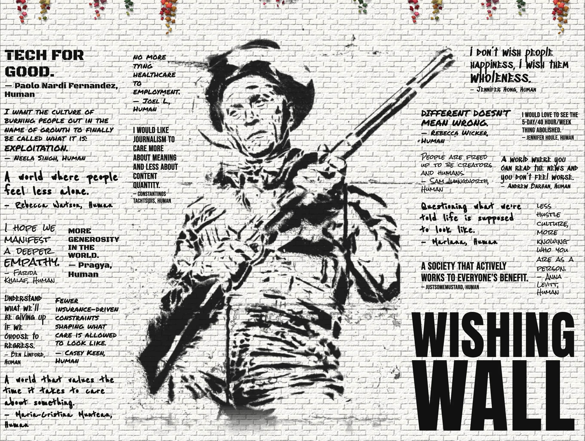
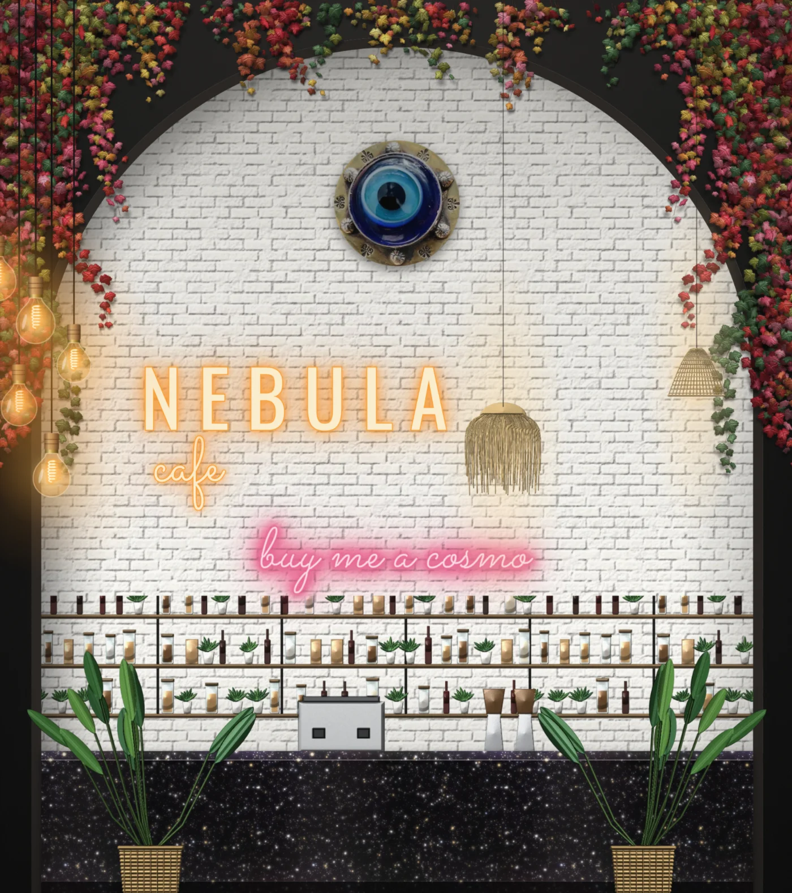

← 777 Daydream St.
Newsstand
Wishing Wall
Nebula Cafe
Gallery
Scroll up
← Newsstand
↖ Wishing Wall
↑ Cafe
Gallery →
×
×

×

Buy me a coffee (opens Buy Me a Coffee in a new tab)
The pink neon opens
Buy Me a Coffee ↗
×
LIFE
← All photos
‹
›